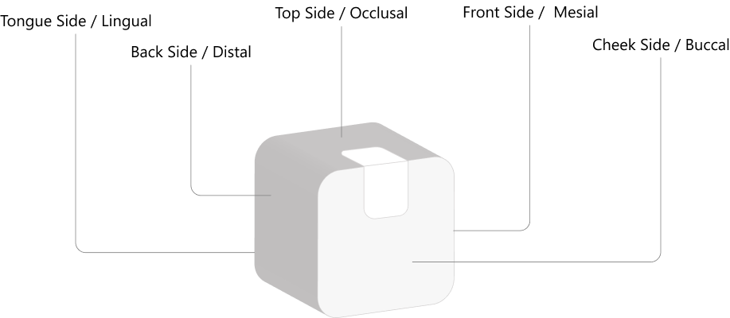
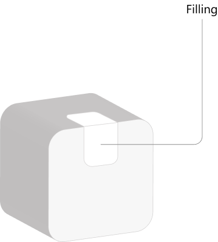
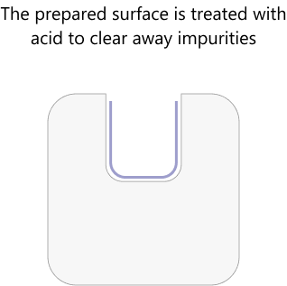
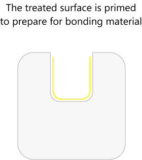
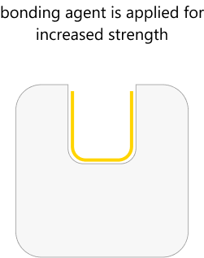
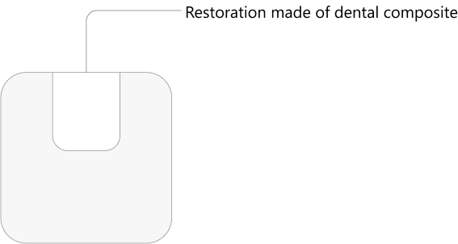
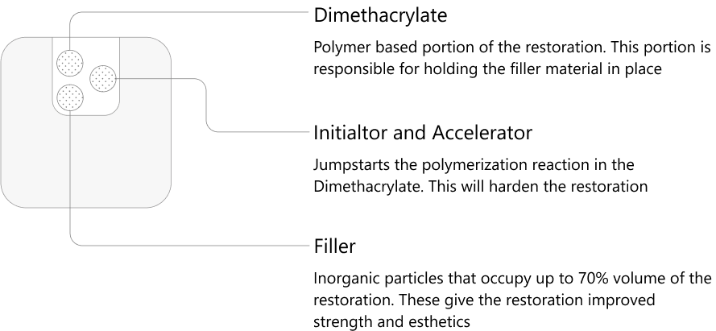

Restoration
There are many sides to a tooth
This is the most common way we can make broken teeth whole again. However there is more detail to this procedure than what meets the eye.
What to expect
At the appointment
-
 Duration 30-60 min
Duration 30-60 min -
 Oral anesthetic use
Oral anesthetic use -
 Possible minor sensitivity
Possible minor sensitivity - Tooth colored filling
After Appoinment
- Possible post operative sensitivity to temperature changes
-
 Avoid eating until numbness wears off
Avoid eating until numbness wears off
What it is
There are many sides to a tooth, and each side gets its own specific name

Fillings may cover multiple sides of the tooth at once. Bigger cavity = more sides to the filling = more expensive filling

How it is accomplished
Tooth decay is removed by a bur until hard tooth structure is reached.
  
Once the bonding steps are complete the area is ready to receive a filling. A tooth colored filling or restoration is placed.

After the restoration is placed, final adjustments are made to make sure that the dimensions are compatible with the current bite.
Materials
All dental composite is made up of three basic components
